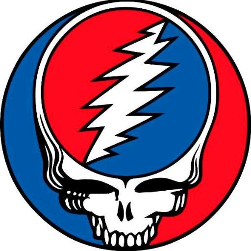
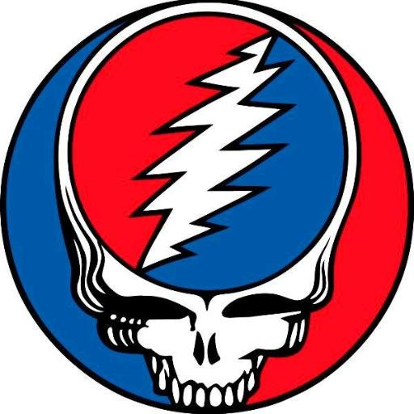

My music interests are not very limited, I like all music except for country and gospel. My favorite bands and artists include Pink Floyd, The Greatfull Dead, Kahlid, 21 Savage, J. Cole, and Billy Jole. My mom sings in a Greatfull Dead cover band with her fiance who plays the keyboard. She introduced me to the Greatfull Dead when I was young, she always played classic rock and a varity of "hippie" music in long car rides up to the ski mountain. Recently I enjoy more modern music such as J. Cole 21 Savage, and Kahlid my all time favorie album is 2014 Forest Hills Drive by J. Cole.
Snowboarding

Snowboarding has been a passion of mine since I was eight years old, but I have been around ski mountians my entire life. My family used to take the sport very serioulsy. When I was two my started mom skiing with me on her back before I could even walk. Eventuslly I graduated to the leash, and soon riding solo. Out of my three cousins I was the only skiier and I was always interested in the was my cousins carved the mountain with their boards. After turning eight I asked my parents if I could give snowboarding a try, reluctantly they agreed and it has been a passion of mine ever since.